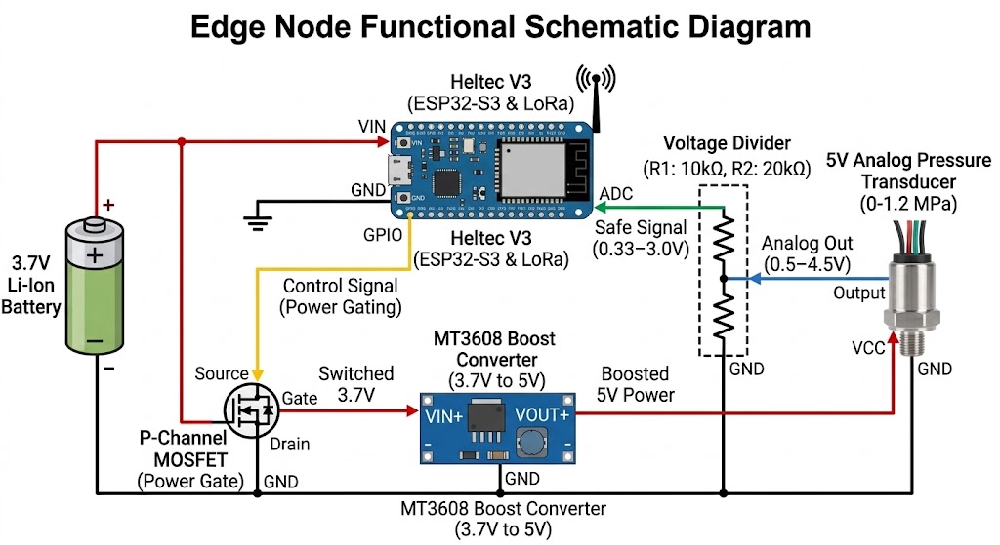

Abstract
The degradation of water distribution infrastructure results in significant volumetric losses, yet enterprise-grade telemetry systems utilizing commercial LoRaWAN gateways and proprietary Geographic Information Systems (GIS) remain economically unfeasible for low-budget deployments. This study presents a frugal engineering framework for decentralized pipeline leak detection, strictly scoped as a location-agnostic, bench-tested prototype with a per-node budget constraint under ₱2,000. The edge architecture integrates a 0-1.2 MPa analog piezoresistive pressure transducer with a Heltec WiFi LoRa 32 V3 (ESP32-S3) microcontroller. To maximize battery lifespan, a custom two-stage MOSFET power-gating circuit sequences an MT3608 boost converter, isolating the 5V sensor current draw during sleep cycles.
Multipoint telemetry is transmitted via a raw 915 MHz LoRa Star Topology, explicitly bypassing commercial gateways to eliminate recurring network server overhead. A central receiver routes packed data structures to a Firebase backend, where a Dart-based differential pressure algorithm calculates continuous rate-of-change (dP/dt). This logic analyzes cross-node variance to accurately distinguish between localized simulated pipeline ruptures and systemic bench-test pump shutoffs. System states are dynamically visualized on a micro-GIS Flutter application leveraging the Mapbox API mapped to an arbitrary test grid. The framework validates that spatial anomaly triangulation can be achieved effectively using open-source tools and decentralized raw RF architectures without enterprise infrastructure.
Background of the Study
The degradation of pipeline infrastructure leads to significant volumetric losses commonly categorized as Non-Revenue Water (NRW). While enterprise-grade acoustic and flow-based sensor networks exist, their deployment is cost-prohibitive. This research focuses on utilizing analog piezoresistive pressure transducers coupled with low-cost edge computing (ESP32-S3) to measure internal pipeline pressure variations.
Statement of the Problem
This study aims to develop a bench-tested, low-cost decentralized pipeline leak detection system. Specifically, it seeks to answer the following:
- How can a power-gated sensor circuit be optimized to extend the operational lifespan of a battery-powered edge node?
- How effectively can a raw 915 MHz LoRa Star Topology transmit multipoint pressure telemetry without LoRaWAN infrastructure?
- How accurately can a differential pressure algorithm differentiate between localized pipeline ruptures and systemic supply shutoffs on a test bench?
Objectives
- Design and bench-test an edge node hardware architecture utilizing an ESP32-S3, MT3608 boost converter, and a two-stage MOSFET power-gating circuit.
- Develop a C++ packed data structure for efficient raw LoRa telemetry transmission.
- Implement a Dart-based backend algorithm to process dP/dt over a sliding time window.
- Engineer a micro-GIS Flutter dashboard to plot node states dynamically on a localized arbitrary test grid.
Scope and Limitations
This study is strictly scoped to the development and bench-testing of the edge node prototype to validate the architecture. It operates purely as a location-agnostic system without requiring live LGU utility deployment. The budget constraint is strictly maintained under ₱2,000 per node.

Figure 1. Edge Node Hardware Architecture (ESP32-S3, MT3608, and MOSFET power-gating).
Review of Related Literature
This chapter reviews the technical literature establishing the foundation for decentralized pipeline leak detection. The selected studies validate the core physics of pressure-based anomaly detection, the efficacy of Low-Power Wide-Area Networks (LPWAN), and the utility of Geographic Information Systems (GIS).
By analyzing the hardware, software, and economic architectures of existing state-of-the-art systems, this review identifies critical gaps in deployability for resource-constrained configurations. These gaps justify the frugal engineering methodologies—specifically the use of raw LoRa Star Topologies and open-source Micro-GIS—proposed in this capstone project.
Geospatial Mapping and GIS in Water Management
Reference: Water, E. (2026, March 11). Saving Water: MAWC’s GIS-Powered Leak Detection Strategy. Industry Blogs.
Software Concept Validation
Current industry literature demonstrates that major utilities utilize Geographic Information Systems (GIS) as their primary method to map leaks and visualize pressure zones to combat Non-Revenue Water. This validates the project's operational goal of utilizing Mapbox and Flutter to map anomalies spatially, proving that geospatial mapping is the current industry gold standard over basic text-based interfaces.
Economic Mismatch
A critical limitation of the referenced system is its reliance on Esri ArcGIS—a closed-source, proprietary enterprise software suite requiring heavy commercial licensing, server infrastructure, and SCADA integration. This financial exclusivity prevents adoption in frugal engineering contexts. In contrast, this project utilizes free-tier, open-source-friendly platforms paired with a low-cost raw LoRa network.
LoRaWAN and IoT Pressure Rate Profiling
Reference: S, D., OA, A., SA, O., & JO, B. (2023). Development of LoRaWAN-Based IoT Monitoring Device for Pressure Rate Profiling in Water Pipelines. Saudi Journal of Engineering and Technology.
Hardware Concept Validation
This study scientifically validates the use of IoT monitoring devices for "Pressure Rate Profiling" using piezoresistive transducers. It establishes that monitoring internal pressure—without the need for complex in-line flow meters or expensive acoustic sensors—is a highly effective physics-based method for detecting anomalies in water pipelines.
Network Architecture Mismatch
The referenced architecture explicitly relies on the LoRaWAN protocol, necessitating commercial gateways, internet-connected network servers, and complex MAC-layer protocols. This project diverges from this dependency by utilizing Raw LoRa (915 MHz) in a localized Star Topology. This eliminates commercial gateway overhead and third-party SaaS fees, adhering directly to the bench-tested constraints.
Baseline Pressure Sensing Architectures
Reference: (DOC) A Proposed Design of Pressure Sensor as Water Leak detection System. (2026). Academia.Edu.
Conceptual Match
This baseline research establishes the fundamental physics of the project: monitoring internal pressure drops utilizing 0-1 MPa analog piezoresistive transducers is a scientifically sound method for identifying water leaks.
Systemic Logic Mismatch
Traditional proposed designs operate on isolated, single-node threshold logic (e.g., triggering a localized alarm when pressure drops below a static PSI). These setups lack spatial awareness. A single sensor dropping could easily denote a routine municipal pump shutdown rather than a leak. This limitation justifies the project's development of multi-node differential triangulation integrated into a Micro-GIS interface, ensuring localized drops are compared against the entire network to eliminate false positives.
Synthesis of the State-of-the-Art and Gap Analysis
Current industry strategies heavily emphasize Geographic Information Systems (GIS) for mitigating Non-Revenue Water. As highlighted by Water (2026), utilities utilize enterprise GIS platforms to map leaks and optimize maintenance dispatch strategies. However, commercial platforms require expensive proprietary software licenses and extensive SCADA infrastructure integrations, rendering them financially unfeasible for low-budget implementations. To address this economic barrier, this study democratizes spatial leak detection by engineering a micro-GIS architecture using open-source-compatible tools (Mapbox and Firebase) driven by a decentralized, low-cost LoRa network, achieving comparable spatial triangulation without the enterprise overhead.
The viability of utilizing pressure sensors for pipeline telemetry is validated by S et al. (2023) and Academia.edu (2026), who successfully established pressure profiling as a sound alternative to acoustic sensing. However, S et al.'s architecture relies on the LoRaWAN protocol, which inherently requires internet-dependent gateways and third-party network servers, increasing both deployment costs and infrastructural complexity. To adapt this pressure-profiling concept for low-budget deployment, this study abandons the LoRaWAN stack in favor of a localized, raw LoRa Star Topology, eliminating gateway overhead while preserving the core pressure-telemetry capabilities.
Furthermore, basic pressure-sensing architectures traditionally rely on isolated, single-node threshold alerts which lack spatial awareness and are prone to false positives during standard pressure fluctuations. To elevate this baseline concept into a robust monitoring system, this study introduces multi-node differential analysis. By networking multiple pressure transducers via a raw LoRa Star Topology and routing the telemetry to a localized Micro-GIS Mapbox interface, the system cross-references pressure drops across the grid to triangulate anomalies and filter out isolated false alarms.
Conceptual Framework
Based on the gap analysis, the system architecture utilizes a modified Input-Process-Output (IPO) model engineered strictly for frugal, localized deployment.
INPUT (Edge Node)
- 0-1.2 MPa Piezoresistive Transducer
- ESP32-S3 ADC Signal Reading
- MT3608 Power-Gated 5V Supply
- Li-Ion Battery Telemetry
PROCESS (Transmission)
- Raw 915MHz LoRa Transceiver
- Star Topology Payload Routing
- Firebase Realtime Sync
- Dart Differential Algorithm (dP/dt)
OUTPUT (UI/UX)
- Flutter Mobile Application
- Mapbox Micro-GIS Interface
- Triangulated Alert Visuals
- System-Loss vs Leak Distinction